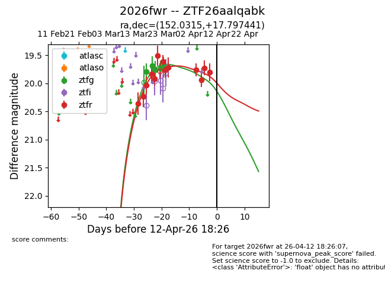
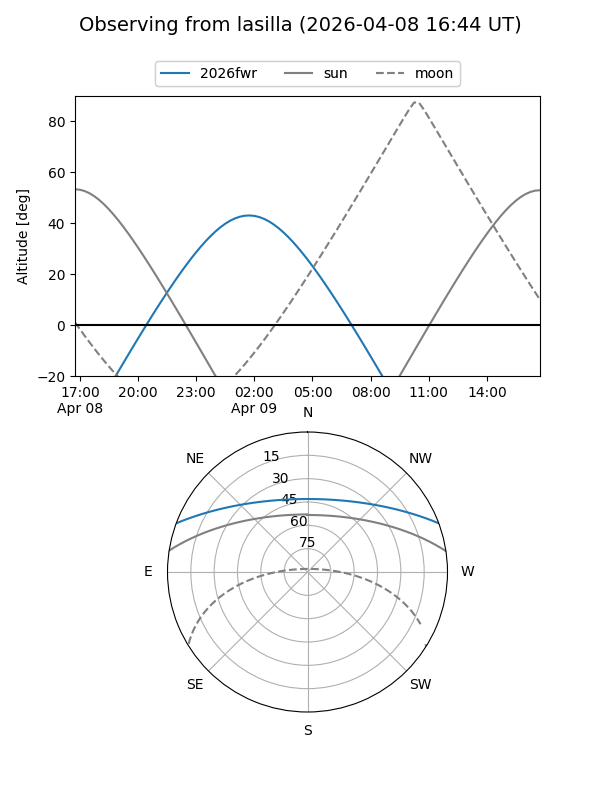
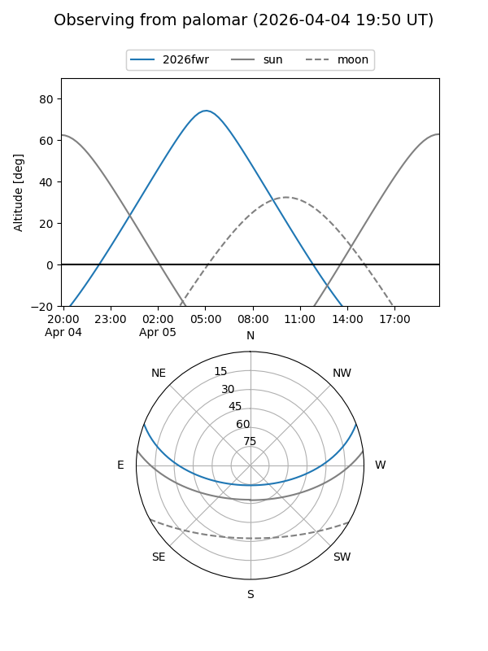
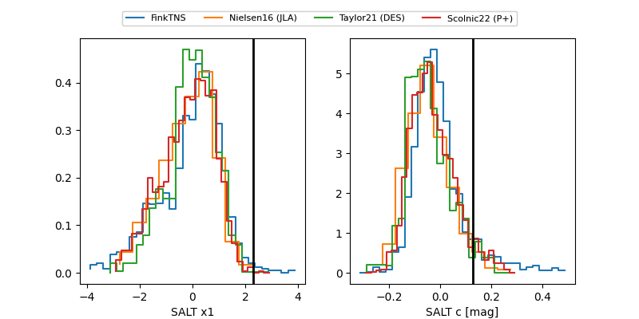

2026fwr
Target 2026fwr at 2026-04-12 18:36
Aliases and brokers:
FINK: link
Lasair: link
ALeRCE: link
TNS: link
YSE: link
alt names
ZTF26aalqabk (ztf,fink_ztf)
2026fwr (tns,yse)
Coordinates:
equatorial (ra, dec) = 152.0315,+17.79744
equatorial (HMS+DMS) = 10:08:07.57,+17:47:50.79
galactic (l, b) = (218.1174,+51.31346)
Flags:
Photometry:
last ztfg=19.73, ztfr=19.80
6 ztfg, 13 ztfr detections
Lightcurve

Visibility


Additional plots
